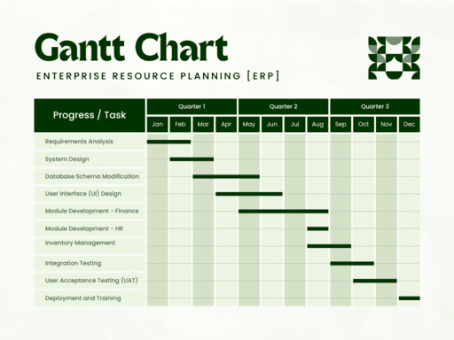

3.7 Resource Allocation Models
Resource allocation models are strategies and techniques used to distribute project resources — personnel, time, budget, and computing capacity — across the tasks of a software project. Effective allocation helps the project manager meet deadlines, maintain product quality, and stay within budget. Poor allocation, by contrast, is a major cause of schedule slippage and cost overrun identified in the SPM overview (§3.1).
Once effort and duration have been estimated (see §3.5 and §3.6), the manager must decide who does what and when. Resource allocation models provide the scheduling and levelling tools for this decision.
Major resource allocation techniques
Critical Path Method (CPM)
CPM is a step-by-step scheduling technique that identifies the critical path — the longest sequence of dependent tasks that determines the minimum project duration. Tasks on the critical path have zero slack; any delay on these tasks delays the entire project. Non-critical tasks have float time and can be shifted without affecting the end date. CPM helps managers focus resources on bottleneck activities.
Program Evaluation and Review Technique (PERT)
PERT is a statistical scheduling tool that estimates project duration when task times are uncertain. Each activity is assigned three time estimates — optimistic (to), most likely (tm), and pessimistic (tp) — and the expected duration is computed as (to + 4tm + tp) ÷ 6. PERT is useful early in planning when little historical data exists.
Gantt chart
A Gantt chart is a bar chart that lists tasks on the vertical axis and time intervals on the horizontal axis. Each bar shows when a task starts and ends. Gantt charts are easy to read and are the most common visual tool for communicating schedules to stakeholders. They can also show resource assignments and milestone markers.

A Gantt chart reads as follows:
- Left column: Lists all project tasks or phases (e.g. requirements analysis, system design, module development, testing, deployment).
- Top row: Shows the timeline — months or quarters across the project duration.
- Horizontal bars: Each bar represents one task's start date, end date, and duration. Overlapping bars show parallel work.
- Dependencies: When one task must finish before another starts, the bar positions reflect that sequence.
In the ERP example above, module development for Finance, HR, and Inventory can run in parallel, while integration testing and UAT follow sequentially once development is complete.
Resource levelling (resource smoothing)
Resource levelling adjusts the project schedule to balance the demand for resources (especially people) against the available supply. Without levelling, several tasks may demand the same specialist at the same time, causing overload. Levelling shifts non-critical tasks within their float to smooth the workload, though it may extend the project duration if critical-path tasks are affected.
Agile resource allocation
In Agile teams, resources are allocated per iteration (sprint) based on team velocity, the priority of user stories, and the size of tasks (often measured in story points). The product owner prioritises the backlog and the team commits to what it can deliver in each sprint. This model replaces long upfront scheduling with continuous reallocation.
Relationship to effort formulas
Resource allocation connects directly to the estimation relationships from §3.5: if total effort is 120 person-months and the deadline is 12 months, the manager needs approximately 10 full-time staff. CPM and PERT determine whether that staffing level can complete the critical-path work in time; resource levelling ensures no individual is over-allocated.
Q: What are resource allocation models in software engineering? Explain CPM, PERT, Gantt charts, and resource levelling.
Model answer points:
- Resource allocation distributes personnel, time, budget, and tools across project tasks.
- CPM: identifies critical path (longest dependent task chain); zero slack on critical tasks.
- PERT: three time estimates (optimistic, likely, pessimistic); expected time = (to+4tm+tp)/6.
- Gantt chart: bar chart of tasks vs time; visual schedule communication.
- Resource levelling: balance demand vs supply; shift non-critical tasks to avoid overload.
- Agile: allocate per sprint based on velocity and story priority.
- Link to effort formula: Team Size = Effort ÷ Duration.